Next: Flowchart of comparative modeling Up: Equations used in the Previous: Features and their derivatives Contents Index
The chain rule is used to find the partial derivatives of the feature pdf with respect to the atomic coordinates. Thus, only the derivatives of the pdf with respect to the features are listed here.
The pdf for a geometric feature  (e.g., distance, angle,
dihedral angle) is
(e.g., distance, angle,
dihedral angle) is
 in the sum that defines the objective
function
in the sum that defines the objective
function  is
(Note that since the second term is constant for a given restraint, it is
ignored. is also scaled by 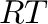 in kcal/mol with
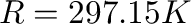 to allow
these scores to be summed with CHARMM energies.)
is
(Note that since the second term is constant for a given restraint, it is
ignored. is also scaled by 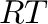 in kcal/mol with
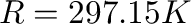 to allow
these scores to be summed with CHARMM energies.)
The first derivatives with respect to feature are:
| 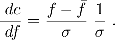 | (A.64) |
The relative heavy violation with respect to is given as:
The polymodal pdf for a geometric feature (e.g., distance, angle,
dihedral angle) is
in the sum that defines the objective
function is (as before, this is scaled by ):
| 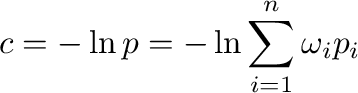 | (A.67) |
The first derivatives with respect to feature are:
When any of the normalized deviations 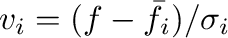 is large, there are numerical instabilities in calculating the derivatives because 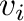 are arguments to the exp function. Robustness is ensured as follows. The ‘effective’ normalized deviation is used in all the equations above when the magnitude of normalized violation 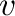 is larger than cutoff rgauss1 (10 for double precision). This scheme works up to rgauss2 (200 for double precision); violations larger than that are ignored. This trick is equivalent to increasing the standard deviation 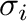. A slight disadvantage is that there is a discontinuity in the first derivatives at rgauss1. However, if continuity were imposed, the range would not be extended (this is equivalent to linearizing the Gaussian, but since it is already linear for large deviations, a linearization with derivatives smoothness would not introduce much change at all).
| 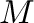 |  |
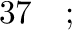  |
(A.69) |
|
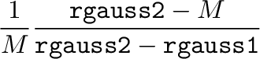 | (A.70) | |
 |
|
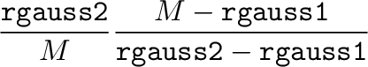 | (A.71) |
 |
|
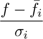 | (A.72) |
| 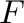 | |
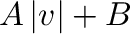 | (A.73) |
| 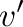 | |
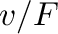 | (A.74) |
Now, Eqs. A.66-A.68 are used with 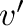 instead of . For single precision, 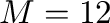, rgauss1 = 4, rgauss2 = 100.
The relative heavy violation with respect to is given as:
| 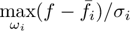 | (A.75) |
The polymodal pdf for a geometric feature 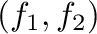 (e.g., a pair of dihedral angles) is
 .
MODELLER actually uses the following series expansion to calculate
.
MODELLER actually uses the following series expansion to calculate  :
:
A corresponding restraint in the sum that defines the objective
function is (as before, this is scaled by ):
| (A.78) |
The first derivatives with respect to features and are:
The relative heavy violation with respect to is given as:
| 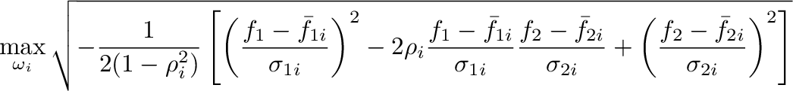 | (A.81) |
This is like the left half of a single Gaussian restraint:
where 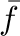 is a lower bound and 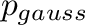 is given in Eq. A.62. A similar equation relying on the first derivatives of a Gaussian
holds for the first derivatives of a lower bound.
This is like the right half of a single Gaussian restraint:
where is an upper bound and is given in Eq. A.62. A similar equation relying on the first derivatives of a Gaussian
holds for the first derivatives of an upper bound.
This is usually used for dihedral angles :
where
 is CHARMM force constant,
is CHARMM force constant,  is phase shift (tested for
0 and 180°), and
is phase shift (tested for
0 and 180°), and  is periodicity (tested for 1, 2, 3, 4, 5, and 6).
The CHARMM phase value from the CHARMM parameter library corresponds to
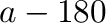°. The force constant can be negative, in effect offsetting
the phase for 180° compared to the same but positive force constant.
is periodicity (tested for 1, 2, 3, 4, 5, and 6).
The CHARMM phase value from the CHARMM parameter library corresponds to
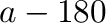°. The force constant can be negative, in effect offsetting
the phase for 180° compared to the same but positive force constant.
 |
(A.85) |
 are the atomic charges of atoms
are the atomic charges of atoms  and
and  ,
obtained from the CHARMM topology file, that are at a distance .
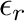 is the relative dielectric, controlled by
the energy_data.relative_dielectric variable.
Function
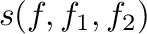 is a switching function that smoothes
the potential down to zero in the interval from to (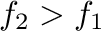).
The total Coulomb energy of a molecule is a sum over all pairs of atoms
that are not in the same bonds or bond angles.
1-4 energy for the 1-4 atom pairs in the same dihedral angle
corresponds to the ELEC14 MODELLER term; the remaining
longer-range contribution corresponds to the ELEC term.
,
obtained from the CHARMM topology file, that are at a distance .
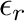 is the relative dielectric, controlled by
the energy_data.relative_dielectric variable.
Function
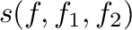 is a switching function that smoothes
the potential down to zero in the interval from to (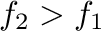).
The total Coulomb energy of a molecule is a sum over all pairs of atoms
that are not in the same bonds or bond angles.
1-4 energy for the 1-4 atom pairs in the same dihedral angle
corresponds to the ELEC14 MODELLER term; the remaining
longer-range contribution corresponds to the ELEC term.
The first derivatives are:
|
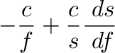 | (A.88) | |
 |
|
(A.89) |
The violations of this restraint are always reported as zero.
Usually used for non-bonded distances:
The parameters and of the switching function can be
different from those in Eq. A.87. The parameters  and
and
 are obtained from the CHARMM parameter file (NONBOND section)
where they are given as
are obtained from the CHARMM parameter file (NONBOND section)
where they are given as  and such that
in kcal/mole
for in angstroms and
; the minimum of
is
at
, and its zero is at
and such that
in kcal/mole
for in angstroms and
; the minimum of
is
at
, and its zero is at
 . The total Lennard-Jones energy should be evaluated over all
pairs of atoms that are not in the same bonds or bond angles. The
parameters and for 1-4 pairs in dihedral angles can be
different from those for the other pairs; they are obtained from the
second set of and in the CHARMM parameter file, if it
exists. 1-4 energy corresponds to the LJ14 MODELLER term; the
remaining longer-range contribution corresponds to the LJ term.
. The total Lennard-Jones energy should be evaluated over all
pairs of atoms that are not in the same bonds or bond angles. The
parameters and for 1-4 pairs in dihedral angles can be
different from those for the other pairs; they are obtained from the
second set of and in the CHARMM parameter file, if it
exists. 1-4 energy corresponds to the LJ14 MODELLER term; the
remaining longer-range contribution corresponds to the LJ term.
The first derivatives are:
|
(A.91) | ||
|
(A.92) |
As tends toward zero, the repulsive part of the energy dominates,
and approaches infinity. Near-infinite forces result
in unstable trajectories during optimization. This is particularly a problem
in the first few steps of optimization starting from randomized, interpolated,
or otherwise non-physical atomic coordinates. To avoid this, the potential
is simply artificially truncated: if  exceeds 6, is treated as being
equal to .
exceeds 6, is treated as being
equal to .
The violations of this restraint are always reported as zero.
Any restraint form can be represented by a cubic spline [Press et al., 1992]:
The first derivatives are:
| (A.98) |
The values of and beyond and  are obtained by linear
interpolation from the termini. A violation of the restraint is calculated
by finding the global minimum. A relative violation is estimated by using
a standard deviation (e.g., force constant) obtained by fitting
a parabola to the global minimum.
are obtained by linear
interpolation from the termini. A violation of the restraint is calculated
by finding the global minimum. A relative violation is estimated by using
a standard deviation (e.g., force constant) obtained by fitting
a parabola to the global minimum.
Variable spacing of spline points could be used to save on memory. However, this would increase the execution time, so it is not used.
To calculate the relative heavy violation, the feature value
that results in the smallest value of the restraint is obtained by
interpolation, and a Gaussian function is fitted locally around this value to
obtain the standard deviation  . These are then used in
Eq. A.65.
. These are then used in
Eq. A.65.
The asymmetry penalty added to the objective function is defined as
where the sum runs over all pairs of equivalent atoms
 ,
is an atom weight for atom , is
an intra-molecular distance between atoms in the first
segment, and is the equivalent distance in the second
segment.
,
is an atom weight for atom , is
an intra-molecular distance between atoms in the first
segment, and is the equivalent distance in the second
segment.
For each , the first derivatives are:
|
(A.100) | ||
|
(A.101) |
and distances.

![$\displaystyle \exp \left\{-\frac{1}{1-\rho_i^2}
\left[
\frac{1-\cos(f_1-\bar{f}...
...ma_{2i}} +
\frac{1-\cos(f_2-\bar{f}_{2i})}{\sigma_{2i}^2}
\right]
\right\} \; .$](img362.png)
![$\displaystyle \frac{1}{p}
\sum_{i=1}^n \left[ \omega_i p_i \cdot
\frac{1}{\sigm...
...\cos(f_2-\bar{f}_{2i})\sin(f_1-\bar{f}_{1i})}{\sigma_{1i}}
\right)
\right] \; .$](img366.png)